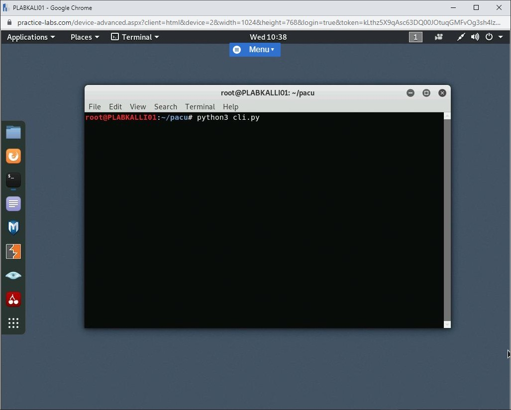

Introduction
9beca326-b493-4b0e-b3dc-d7dfb77df3c9
Welcome to the Wireless and Cloud Assessment Tools Practice Lab. In this module, you will be provided with the instructions and devices needed to develop your hands-on skills.
dc640c20-9434-45ea-b7c2-6d4d6a196bfc
Learning Outcomes
In this module, you will complete the following exercises:
- Exercise 1 - Wireless Assessment Tools
- Exercise 2 - Cloud Models
- Exercise 3 - Cloud Infrastructure Assessment Tools
After completing this module, you will be able to:
After completing this module, you will have a further understanding of:
- Private, Public, Hybrid and Community Clouds
- Aircrack-ng
- Reaver
- oclHashcat
- ScoutSuite
- Prowler
Exam Objectives
The following exam objectives are covered in this lab:
- 1.4 Given a scenario, analyze the output from common vulnerability assessment tools.
- 1.6 Explain the threats and vulnerabilities associated with operating in the cloud.
Note: Our main
focus is to cover the practical, hands-on aspects of the exam
objectives. We recommend referring to course material or a search engine
to research theoretical topics in more detail.
Lab Duration
It will take approximately 1 hour to complete this lab.
1b317064-7b0c-48e0-845c-05a2d99e80c5
Help and Support
For more information on using Practice Labs, please see our Help and Support page. You can also raise a technical support ticket from this page.
Click Next to view the Lab topology used in this module.
d2c53300-f951-45a9-9aa4-3d4ecae69e11
Lab Topology
During your session, you will have access to the following lab configuration.

Depending on the exercises, you may or may not use all
of the devices, but they are shown here in the layout to get an overall
understanding of the topology of the lab.
- PLABDC01 - (Windows Server 2019 - Domain Server)
- PLABDM01 - (Windows Server 2019 - Domain Member)
- PLABKALI01 - (Kali Linux 2019 - Linux Kali)
- PLABWIN10 - (Windows 10 - Domain Member Workstation)
- PLABCENTOS - (Centos 8 Linux - Stand-alone Linux Server)
- PLABALIENVAULT - (Alien Vault Linux Security Management Platform)
Click Next to proceed to the first exercise.
<
Home |
README |
Cloud Service Model Vulnerabilities >
CompTIA Cybersecurity Analyst (CySA+) Practice Labs
Exercise 1 - Wireless Assessment Tools
Wireless networks have become quite common for
personal and office use. However, the security of wireless networks
remains one of the top concerns. You can use various tools to assess the
security of wireless networks. You can also use various tools to try to
crack the passwords from the wireless networks.
In this exercise, you will learn about wireless assessment tools.
Learning Outcomes
After completing this exercise, you will have a further understanding of:
- Aircrack-ng
- Reaver
- oclHashcat
Your Devices
You will be using the following devices in this lab. Please power this on now.
- PLABKALI01 - (Kali Linux 2019 - Linux Kali)
Aircrack-ng
Aircrack-ng is a wireless network monitoring
and password cracking tool. You can use it to assess the security of a
wireless network. You can also use it to capture packets from a wireless
network. Using Aircrack-ng, you can crack wireless protocols, such as WEP and WPA PSK.
Aircrack-ng is available on different platforms, such as:
- Linux
- Solaris
- Windows
- FreeBSD
- OpenBSD
- OS X
Aircrack-ng is capable of doing a lot of tasks, such as:
- It can monitor the wireless network
- It can perform packet capturing and exporting of captured data into text files
- It can perform various types of attacks, such as PTW,
WEP dictionary, Fragmentation, WPA1, and 2 cracking, and WPA Migration
mode
- It can also be used for testing wireless adapter cards and their drivers
Aircrack-ng is available in the Kali Linux by default. You can invoke Aircrack-ng using the following path:
Applications > 06 - Wireless Attacks > aircrack-ng
Figure 1.1 Screenshot of PLABKALI01: Clicking Aircrack-ng from Applications > 06 - Wireless Attacks.
You can start it from the Applications menu or the
command prompt. You need to first start by verifying if the wireless
adapter on your system supports the monitor mode:
airmon-ng
If you do not find any wireless adapter listed in the
result, this means that the wireless adapter on your system does not
support the monitor mode.
Figure 1.2 Screenshot of PLABKALI01: Showing the output of the airmon-ng command in the terminal window.
Reaver
Reaver is another wireless password cracking tool. It needs to have two inputs:
Both these can be captured with Aircrack-ng. After you
have got both the details, you need to supply them to the Reaver tool,
which will perform a brute force attack on the wireless router to figure
out the password.
Reaver is available in Kali Linux by default. You can invoke Reaver using the following path:
Applications > 06 - Wireless Attacks > reaver
Figure 1.3 Screenshot of PLABKALI01: Clicking reaver from Applications > 06 - Wireless Attacks.
After you start Reaver, it opens the command prompt window:
Figure 1.4 Screenshot of PLABKALI01: Showing the reaver tool in the terminal window.
To be able to crack the password, you need to use the following command:
reaver -i mon0 -c 6 -b 00:23:69:11:33:22
In this command, the -i switch defines mon0, which represents the monitor interface. The -c switch represents the channel being used. The -b switch represents the BSSID.
Note: Please be aware that the
command would not be used on the Practice Labs device, the above is to
detail that if you were to crack a password, you would use the command.
It is an example.
Figure 1.5 Screenshot of PLABKALI01: Showing the various parameters of the reaver tool in the terminal window.
oclHashcat
There will be times when you will obtain hashes
instead of passwords. You would need to find out the passwords from
these hashes. However, this cannot be done without using a tool that can
crack hashes. oclHashcat is one such tool. Most of the time, a hash cracker will use CPU power, which slows down the hash cracking process and also the system itself. oclHashcat used the Graphics Processing Unit (GPU) instead of CPU. When a GPU is used, it can perform a task at high speed because it has more cores than a CPU. A GPU also has the capability of running several tasks in parallel without impacting the system performance.
oclHashcat, however, is now deprecated and is no longer being updated. It is now merged with another tool named Hashcat and is released under the name Hashcat, which has several key features:
- It is an open-source tool under the MIT License.
- It supports various operating systems, such as Linux, Windows, and macOS
- It can also work with different platforms, such as CPU, GPU, DSP, and FPGA. It can work with any platform with the OpenCL runtime.
- It can crack multiple hashes simultaneously.
- It can also use multiple devices within a single system.
Hashcat is available in Kali Linux by default. You can open Hashcat using the following path:
Applications > 05 - Password Attacks > hashcat
Figure 1.6 Screenshot of PLABKALI01: Clicking hashcat in the Applications > 05 - Password Attacks menu.
After you click on hashcat in the menu options, it starts the hashcat tool in the terminal window.
Figure 1.7 Screenshot of PLABKALI01: Showing the hashcat tool in the terminal window.
Hashcat can perform various types of attacks, which are:
- Straight
- Combination
- Brute-force
- Hybrid dictionary + mask
- Hybrid mask + dictionary
It also supports hash cracking from various algorithms, such as:
- MD4
- MD5
- Half MD5
- SHA1
- SHA2-224
- SHA2-256
- SHA2-384
- SHA2-512
- SHA3-224
- SHA3-256
- SHA3-384
- SHA3-512
Other than this, it can crack passwords from many
applications, which use different types of algorithms for hashing
passwords. For example, it can crack the hashes of WordPress when it
uses MD5.
5552932f-e263-4095-bb6a-fa7be9031d50
<
Home |
README |
Cloud Service Model Vulnerabilities >
CompTIA Cybersecurity Analyst (CySA+) Practice Labs
Exercise 2 - Cloud Models
In this exercise, the different types of cloud models
will be discussed and how these different models can be applied in an
IT infrastructure. In addition, the benefits of these different models
will also be covered.
Learning Outcomes
After completing this exercise, you will have a further understanding of:
- Private, Public, Hybrid and Community Clouds
Your Devices

Private Cloud
A Private Cloud Infrastructure is implemented by a
company using its own hardware. The specific computer hardware needs to
be purchased, implemented, and maintained by the company.
The computer hardware that needs to be procured by a
company will typically consist of several components, including servers,
switches, and routers. This may have a massive financial impact on the
company.
Hardware can be situated locally on the company premise or in a Datacenter of a third-party provider.
A Private Cloud is used to create a pool of computer resources which can then be accessed and utilized by the company.
Different types of Private Cloud software are
available from different vendors, including Microsoft, Red Hat, and
Suse. This software is designed to implement a private cloud
infrastructure and provide the needed services to access the resources
allocated to it.
Public Cloud
With a Public Cloud Infrastructure, the computer
resources are procured, implemented, and maintained by a third-party
provider, for example, Microsoft. The computing hardware is situated in
Data centers across the world and is accessible through the internet and
can be accessed by anybody who has purchased these specific services or
resources.
The resources that are provided include computing, networking, and storage.
Specific cloud services are provided, which can then
utilized by companies for specific purposes. Companies that access these
services pay for the computing resources being utilized but does not
need to maintain the hardware in the backend.
This course will be specifically focusing on the Microsoft Public Cloud Infrastructure called Azure.
Below is an image of the Azure Portal web interface. This interface is used to create and manage cloud services.
Figure 2.3 Screenshot of PLABWIN10: Displaying the Azure portal web interface.
Hybrid Cloud
A Hybrid Cloud Infrastructure is a combination of a
public and private cloud where the services that are provided are shared
between the different infrastructures. The public and private
infrastructures are connected to each other through the internet to
ensure the resources are available.
This type of cloud infrastructure is used when the
demand for resources fluctuates, and the Private Cloud can not meet
these demands. The Public Cloud’s Infrastructure is then used to
seamlessly scale the resources to meet these demands.
Figure 2.4: Showing the Hybrid Cloud model, showing it is linked to Private and Public Clouds.
Community Cloud
A Community cloud infrastructure refers to shared
cloud computing resources that are shared between a set of organizations
with the same business goals, for example, Universities or Colleges.
These organizations have the same or similar security, privacy, and
resource utilization concerns. These cloud infrastructures may be
managed by a single organization or a third-party provider and can be
hosted on-premise or in a datacentre depending on the needs of the
community. The data that is shared on a Community Cloud is available to
all the participants of the community cloud infrastructure.
Figure 2.5: Showing the Community Cloud model, showing it being utilized by multiple organizations.
dc2a295a-ab17-4b52-8e1c-80389d10a470
<
Home |
README |
Cloud Service Model Vulnerabilities >
CompTIA Cybersecurity Analyst (CySA+) Practice Labs
Exercise 3 - Cloud Assessment Tools
From small to large, most organizations have started
to realize the benefits of using the cloud environment and, as such, are
now adopting a more cloud-based infrastructure. However, it is
important to understand that the infrastructure set up in a cloud
environment must be secured carefully.
Several tools are available that can help you assess
the security of cloud infrastructure. Some of these tools are
commercial, whereas some are open-source that can be used by anyone
without spending a single penny.
In this exercise, you will learn to explore three different open-source tools for cloud security assessment.
Learning Outcomes
After completing this exercise, you will be able to:
After completing this exercise, you will have a further understanding of:
Your Devices
You will be using the following devices in this lab. Please power this on now.

- PLABKALI01 - (Kali Linux 2019 - Linux Kali)
Task 1 - Pacu
Pacu is mainly designed for security professionals who want to test Amazon Web Services (AWS)
security. Pacu runs with the modular architecture that can be used in
penetration testing. It contains several tools that can be used for
testing the security of the AWS environment. For example, you can use tools to exploit the vulnerabilities if they exist.
One of the features of Pacu is that it is an open-source application that is freely available on Github. It can work with both MacOS and Linux environments. Pacu also covers the entire penetration testing lifecycle, which can include:
- Reconnaissance
- Persistence
- Privilege escalation
- Enumeration
- Data exfiltration
- Log manipulation
- Credentials compromise
Other than the penetration testing lifecycle, you can also use Pacu to test the AWS storage,
which is S3. You can test S3 configuration, permissions, and access.
Along with this, you can also perform various other tasks, such as
compromising the EC2 instances and covering tracks by manipulating logs,
which can be stored in CloudTrail or GuardDuty.
Pacu contains various modules that can be used in various stages of security testing. Some of the key modules are:
- confirm_permissions - Lists the permissions for the account being used
- privesc_scan - Can utilize 20 or more different privilege escalation methods
- cloudtrail_csv_injection - Can inject malicious formulas in the CSV files that are being exported from CloudTrail
- disrupt_monitoring - Can disrupt the monitoring capability within the AWS environment
- backdoor_users - Can be used to establish backdoor account access
- sysman_ec2_rce - Can break the AWS Simple Systems Manager to gain access to the root account
- backdoor_ec2_sec_groups - Can be used to add backdoor rules to EC2 security groups
In this task, you will learn to explore Pacu.
Note: In this task, you will get a brief overview of Pacu. You
will not be performing an actual test in the AWS environment due to
various restrictions. If you need to learn further, then you can install
Pacu in your local system and test AWS if you have an account.
Step 1
Ensure that you have powered on the required devices and connect to PLABKALI01. Click the Terminal icon in the application bar on the desktop.
Figure 3.1 Screenshot of PLABKALI01: Clicking the Terminal icon in the application bar on the desktop.
Step 2
You need to clone Pacu from GitHub. To do this, type the following command:
git clone https://github.com/RhinoSecurityLabs/pacu
Press Enter.
Figure 3.2 Screenshot of PLABKALI01: Cloning Pacu from GitHub to the local system.
Step 3
The cloning process has completed, and you need to navigate to the pacu directory. To do this, type the following command:
cd pacu
Press Enter.
Figure 3.3 Screenshot of PLABKALI01: Navigating to the pacu directory.
Step 4
After you have navigated to the directory, you need to execute the install.sh script for Pacu. To do this, type the following command:
bash install.sh
Press Enter.
 Figure 3.4 Screenshot of PLABKALI01: Executing the install.sh script to start Pacu’s installation.
Figure 3.4 Screenshot of PLABKALI01: Executing the install.sh script to start Pacu’s installation.
Step 5
The installation process for Pacu now starts.
Figure 3.5 Screenshot of PLABKALI01: Showing the installation process for Pacu.
Step 6
The installation is now complete.
Figure 3.6 Screenshot of PLABKALI01: Showing the completed installation for Pacu.
Step 7
Clear the screen by entering the following command:
clear
After the installation has completed, you need to start Pacu. To do this, type the following command:
python3 cli.py
Press Enter.
Figure 3.7 Screenshot of PLABKALI01: Starting Pacu using the pacu.py script in the terminal window.
Step 8
Pacu starts with a new session, which you will need to name. To do this, type the following name:
plab
Press Enter.
Figure 3.8 Screenshot of PLABKALI01: Entering the name as plab for the new session.
Step 9
You can list all modules in Pacu. To do this, type the following command:
list
Press Enter.
Figure 3.9 Screenshot of PLABKALI01: Listing all modules in Pacu.
Step 10
Different categories with their modules are listed.
Figure 3.10 Screenshot of PLABKALI01: Showing the listed modules based on their categories.
Step 11
You can find information about the active access
keys. Notice that the prompt already states that no keys are set.
However, you can still run the following command:
whoami
Press Enter.
Figure 3.11 Screenshot of PLABKALI01: Entering the whoami command in the terminal window.
Step 12
The response you receive is False. This is because no active keys are set.
Figure 3.12 Screenshot of PLABKALI01: Showing the output of the whoami command.
Step 13
You can also view various regions in the AWS environment. To do this, type the following command:
regions
Press Enter.
Figure 3.13 Screenshot of PLABKALI01: Listing the regions in AWS using the regions command.
Step 14
Notice that a list of regions is returned.
Figure 3.14 Screenshot of PLABKALI01: Showing the list of regions in AWS.
5552932f-e263-4095-bb6a-fa7be9031d50
Step 15
Close and reopen the terminal so that you are no longer using Pacu.
Before continuing, we need to make sure that the keyring is added.
To add the keyring, type the following command:
wget -q -O - archive.kali.org/archive-key.asc | apt-key add
Press Enter.
Figure 3.15 Screenshot of PLABKALI01: Entering the wget command to add the keyring.
Step 16
You should receive a response stating OK.
Figure 3.16 Screenshot of PLABKALI01: Entering the wget command to add the keyring. OK is shown.
Step 17
To make sure all the repositories are updated, please type:
apt-get update
Press Enter
Figure 3.17 Screenshot of PLABKALI01: Entering the apt-get update command.
Once this update is complete, please move onto the next step.
Step 18
Clear the screen by entering the following command:
clear
You then need to install Pip, which is the Python Package Manager. To do this, type the following command:
apt-get install python3-pip -y
Press Enter.
Figure 3.18 Screenshot of PLABKALI01: Entering the command to install Pip.
Step 19
The installation for Pip now starts.
Figure 3.19 Screenshot of PLABKALI01: Showing the installation progress for Pip.
Step 20
The installation for Pip has now completed.
Figure 3.20 Screenshot of PLABKALI01: Showing the completed installation for Pip.
Scout Suite
Similar to Pacu, Scout Suite is also an open-source application. However, where Pacu is focused on the AWS environment only, Scout Suite is focused on multiple cloud environments. You can perform security testing with the following cloud environments:
- Amazon Web Services
- Microsoft Azure
- Google Cloud Platform
- Alibaba Cloud
- Oracle Cloud Infrastructure
Scout Suite does not penetrate the cloud environment. It uses APIs that are provided by cloud service providers. With the data collected with the use of APIs, it performs the manual inspection and then identifies the risks that may exist within the cloud environment.
Before you start installing Scout Suite, you would need to install Python and Pip.
This has been installed from the previous task.
Post the installation of the pre-requisites, and you
can clone the GitHub repository on the local system using the following
command:
git clone http://github.com/nccgroup/ScoutSuite
ScoutSuite requires the installation of the virtualenv package.
Therefore, run the following command to install this.
pip install virtualenv
After cloning, you need to navigate to the ScoutSuite directory:
$ cd ScoutSuite
Then, you need to get the virtual environment ready:
$ virtualenv -p python3 venv
Then, you need to activate the virtual environment:
$ source venv/bin/activate
To install the dependencies, you need to run the following command:
$ pip install -r requirements.txt
After you get the environment ready, you can start using the Scout Suite.
However, before using a specific cloud service provider’s
infrastructure for testing, you may need to check if they need you to
get permission beforehand.
For example, AWS does not require you to have prior permissions as it only uses API calls to collect data. However, with AWS, you need to have valid credentials to create an account in the Identity and Access Management (IAM). This account that you create should have only the audit permissions.
Prowler
Prowler is another open-source tool that you can use with the AWS environment for security assessment. Prowler is known to be the CIS-based AWS account hardening tool. It can help you perform various assessment tasks, such as:
- Security assessments
- Audits
- Continuous monitoring
- Forensics readiness
- Hardening
It can also perform security assessments against the CIS Controls.
Prowler can be used for evaluating complete
security in the AWS environment. It can verify permissions that a
specific role has in the environment. For example, if a role has too
broad permissions and gets compromised, then the entire infrastructure
for the organization can be compromised. Prowler can verify the
permissions. It can also be used for setting alarms, which get triggered
if there is suspicious activity within your infrastructure in the AWS environment.
To install Prowler, you need to have certain
pre-requisites in place. The first pre-requisite is that you need to
have AWS-CLI installed, assuming that you already have Python and Pip installed. To install the AWS-CLI, you need to use the following command:
pip install awscli detect-secrets
You also need to have jq installed:
apt-get install jq
You may be asked if you want to continue, type Y and press Enter.
Then, you need to clone Prowler on your local system:
git clone https://github.com/toniblyx/prowler
Finally, navigate to the prowler directory:
cd prowler
Once you have navigated inside the prowler directory, you need to then configure AWS-CLI with a valid access key.
aws configure
86b3caf2-2504-4e20-a81b-2fcb2368c8d2
Keep all devices that you have powered on in their current state and proceed to the review section.
Review
Well done, you have completed the Wireless and Cloud Assessment Tools Practice Lab.
2abaca70-efa1-4fe5-94fb-ad1777bfc242
064f5fbe-2d12-498c-85d8-9bcd6229e677
217385e2-979d-4709-8e06-16f9ea80bdf0
8c558193-5c48-4ea3-8ceb-7cb1c42b4b71
1d1b8c5c-5467-4650-a358-3e3216558b3c
5118287e-d8e2-4e8c-a2b1-c416885d2224
aaaaaaaa-1111-1111-1111-193f35a24fe3
Summary
You completed the following exercises:
- Exercise 1 - Wireless Assessment Tools
- Exercise 2 - Cloud Models
- Exercise 3 - Cloud Infrastructure Assessment Tools
You should now be able to:
You should have a further understanding of:
- Private, Public, Hybrid and Community Clouds
- Aircrack-ng
- Reaver
- oclHashcat
- ScoutSuite
- Prowler
Feedback
067744a4-4299-4662-b5be-04dbb636a007
Shutdown all virtual machines used in this lab. Alternatively, you can log out of the lab platform.